Actogram web app (actogram_web_app)
A single-page web app for plotting and analysing rodent locomotor activity rhythms and lighting records stored as timestamped text tables (CSV or TXT: timestamp, activity[, light]).
Developed by The Actogram Web Application Development Team (actograms@proton.me).
Quick access
Use the app directly in your browser, with nothing to install:
https://actograms.github.io/actogram_web_app/actogram_web_app.html
The same app is the actogram_web_app.html file in this repository. You can also download that file and open it locally, without an internet connection.
The project's home page, https://actograms.github.io/actogram_web_app/, shows this README as a web page (index.html in this repository), with a link to the app at the top.
Download and clone
All files of the app (the app itself, its source code, the documentation, the user manual and the demo data) can be downloaded as a single ZIP file:
https://github.com/actograms/actogram_web_app/archive/refs/heads/main.zip
To keep a local copy that can be updated, clone the repository with Git:
git clone https://github.com/actograms/actogram_web_app.git
or with the GitHub CLI:
gh repo clone actograms/actogram_web_app
After downloading or cloning, open actogram_web_app.html in a browser to use the app offline. index.html opens this README as a web page.
User manual
A detailed, illustrated user manual (PDF, 34 pages) is in docs/actogram_web_app_manual.pdf. It covers preparing data files, the actogram and its settings, lighting schedules, the analysis range, zooming, onset detection and editing, regression fits (including the Draw line tool), every analysis tab, saving figures and tables, typical workflows and troubleshooting.
This README is also available as a web page with a contents sidebar: index.html, which is also the project home page (https://actograms.github.io/actogram_web_app/).
Desktop versions (Python and Julia)
The repository also contains two desktop editions of the app for people who prefer to work outside the browser or to analyse many files from a script. They read the same files, use the same methods and simulated demo data, and run entirely on your own computer.
| Python edition | Julia edition | |
|---|---|---|
| File | python/actogram_app.py (one file) |
julia/ActogramApp.jl with julia/Project.toml |
| Window | Tkinter with Matplotlib | GLMakie |
| Figures | PNG, SVG, PDF, EPS (Matplotlib) | PNG, SVG, PDF, EPS (CairoMakie) |
| Without a window | --batch mode |
--batch mode |
| Requires | Python 3.9 or later with Tkinter, numpy and matplotlib | Julia 1.10 or later; packages installed from Project.toml |
Python edition
The Python edition has the same features as the web app: all actogram settings (single, double or triple plots, bars or heat maps, both light/dark colour schemes, gain, right-hand panel), lighting from the light column or from a schedule (with a date and time picker that suggests the ends of L or D of the preceding LD condition), the analysis range, zooming and panning, onset detection and editing (Place onset, Select for fit, Draw line), regression fits per lighting condition, and the Periodogram, Wavelet, Activity profile, Onsets & fits, Phase, Daily activity, Lighting record, All files, File info and Methods tabs. Every figure can be saved as PNG, SVG, PDF or EPS and every table as CSV.
The analysis results below the actogram are laid out as a scrolling page, as in the web app: figures are shown at full width and a readable height, with their tables underneath; scroll with the mouse wheel. Larger analysis area gives the results most of the window (click Larger actogram to go back), and the divider between the actogram and the results can also be dragged. Open in new window shows the current tab in a separate, resizable window with larger figures; such windows follow the recording and settings chosen in the main window, so several tabs can be kept open side by side.
Install the two libraries once (Tkinter comes with most Python installations; on some Linux systems it is the python3-tk package):
pip install numpy matplotlib
Open the window, optionally with files already loaded:
python3 python/actogram_app.py
python3 python/actogram_app.py demo_data/DEMO_WT_LD-DD.csv
Analyse files without a window and write all figures and CSV tables to a folder:
python3 python/actogram_app.py --batch demo_data/*.csv --out results --formats png,pdf
python3 python/actogram_app.py --batch mouse01.csv --schedule "LD@2026-03-01T07:00,L=12:00,D=12:00" --schedule "DD@2026-03-15T19:00" --rows 2-30 --out results
python3 python/actogram_app.py --help lists every option (bin size, plot type, row period and start, style, light/dark colours, lighting source and threshold, schedule, analysis range, periodogram method and range, α, onset settings, phase reference and more). In batch mode each recording gets its actogram, periodogram, wavelet, activity profile, phase, daily activity and lighting figures, its onset, fit, phase, daily, periodogram, profile, wavelet and lighting tables, and all_files.csv summarises all recordings.
Julia edition
The Julia edition is a GLMakie desktop window with the same analyses: the actogram with its display settings and right-hand panel, lighting from the light column or a schedule (each condition's start can be typed or chosen from the suggested ends of L or D), the analysis range and its presets, onset detection, the mouse tools (Zoom, Place onset, Select for fit, Draw line and Analysis range), regression fits, and the Periodogram, Wavelet, Activity profile, Onsets & fits, Phase, Daily activity, Lighting record, All files and File info views. Figures are saved with CairoMakie as PNG, SVG, PDF or EPS, and tables as CSV, into the folder given in the window. Because a GLMakie window cannot scroll, the results can be given more room in two ways: Larger analysis area enlarges the panel below the actogram (click Larger actogram to go back), and Open in new window opens the current view in its own large window, which is updated whenever the recording or the settings change.
Install the packages once, from the julia/ folder:
cd julia
julia --project=. -e "using Pkg; Pkg.instantiate()"
Then open the window, optionally with files or a folder of files:
julia --project=. ActogramApp.jl
julia --project=. ActogramApp.jl ../demo_data
or analyse without a window (this needs only CairoMakie, not OpenGL):
julia --project=. ActogramApp.jl --batch ../demo_data/DEMO_WT_LD-DD.csv --out results --formats png,svg
julia --project=. ActogramApp.jl --help
The first start takes a while because Julia compiles the plotting packages. The Julia edition is new (version 1.0); please report problems through the repository's issue tracker.
Notes for both editions:
- The analyses follow the Methods below. The Python edition reproduces the web app's numbers (onsets, τ, phases, periodogram peaks) for the demo data.
- Recording names in Chinese, Japanese or Korean are read from all supported encodings. Whether they are drawn in figure titles depends on the fonts installed on your computer; file names keep the characters, with unsuitable characters replaced by
_.
Data handling and confidentiality
Your data stay on your computer.
- No upload: files you open or drop on the page are read by your browser with the File API and processed only in the browser's memory on your computer. They are never sent to the hosting server, to the developers, or to anyone else.
- No server-side processing: the app is a static web page, and every parsing, plotting and analysis step runs as JavaScript in your browser. The site has no back end, database or user accounts.
- No storage, tracking or analytics: the app does not use cookies, localStorage, IndexedDB or other browser storage, and it contains no analytics or tracking code. Loaded data, onset edits and settings are discarded when you close or reload the page.
- Exports stay local: CSV, PNG, SVG, PDF and EPS files are created in the browser and saved only to the location you choose.
- Network requests: these are the only connections the page makes, and none of them contain your data:
- the page itself is downloaded from GitHub Pages;
- web fonts are loaded from Google Fonts (
fonts.googleapis.com,fonts.gstatic.com).
As with any website, these services may log technical information such as your IP address and browser type under their own privacy policies.
- Fully offline use: for unpublished or confidential data, you can download actogram_web_app.html and open it from your own disk with the network disconnected. The app works the same, using system fonts instead of the web fonts.
- Desktop editions: the Python and Julia editions read and write files only on your computer and make no network connections while running (installing their libraries the first time downloads them from the package repositories).
You remain responsible for handling your data in line with your institution's policies and any applicable regulations.
Features
Input
- Timestamped tables (
.csvor.txt; comma-, tab- or semicolon-separated) with columnstimestamp, activity[, light], including an optional light column and missing data (see Supported input files) - Several files at once (drag and drop), with per-file lighting settings and analysis ranges
- Built-in simulated demo recordings (see Demo data)
- Text-based
.AWDfiles are also accepted
Actogram
- Single, double or triple plot
- Bin size chosen as a multiple of each file's sampling interval: 1× (the native interval) by default, up to 120 min
- Adjustable row period (τ-plot), row start time and row height
- Plot width: automatic (fits the window, the default) or a fixed width of the time axis from 720 to 2880 px. A wider plot scrolls sideways, and the figure export (PNG, SVG, PDF or EPS) uses the same width. This is separate from zoom, which changes which part of the record is shown.
- Bar or heat-map style: grey heat map, or colour heat maps with the perceptually uniform viridis, magma or cividis scales (a colour bar with the count range is shown in the legend). In heat maps every recorded bin is coloured, including bins with zero counts, and light and dark are shown by a thin bar along the top of each row (amber = light, dark grey = dark). Gain and the noise floor ("Hide below", the low end of the heat-map scale) apply to all styles
- Light/dark shading from the recorded light column or from a schedule entered by hand: a sequence of LD, LL and DD conditions, each starting at any date and time, with LD light and dark lengths in h:mm (so T-cycles are possible) and suggested start times for LL and DD taken from the preceding LD (see Lighting schedule)
- Light/dark colours: yellow (light) and grey-blue (dark), the default, or white (light) and light grey (dark), chosen with Light / dark colours in the Actogram panel. The choice applies to the shading of the bar actogram, the LD bar along the top of each row of the heat maps (with the white / light grey colours it has a thin outline, so that white stays visible), the lighting strips and rings of the wavelet and phase charts, the legend and the figure export
- Missing data highlighted
- Optional panel to the right of the actogram with the total activity of each row (daily total when the row period is 24 h), drawn as thin steel-blue bars, a line or numbers and aligned with the rows; partial rows are faded, and the panel is included in the figure export
- Onsets, offsets and regression lines drawn on the plot, with onsets coloured by the fit they belong to
- Zoom, move and edit tools in a bar above the actogram, including regression-fit controls (see Zooming, moving and editing onsets)
- Onsets used for each regression can be chosen with the mouse, and several regressions can be run on one record (see Regression fits and phase)
- Figure export in four formats: PNG (bitmap at 2× resolution) and the vector formats SVG (Scalable Vector Graphics), PDF and EPS (Encapsulated PostScript). Use the Save PNG / SVG / PDF / EPS buttons above the actogram; every chart in the analysis tabs (periodograms, wavelet, activity profiles, phase plots, daily activity, light) has its own small PNG / SVG / PDF / EPS links in its top-right corner. Exports always use a light (white-background) palette. See Figure export.
Analyses (over a range of rows chosen with the row inputs, the presets, or by dragging over rows on the actogram)
| Tab | Content |
|---|---|
| Periodogram | χ² periodogram (Sokolove & Bushell 1978) with a critical-value line, or Lomb–Scargle periodogram with a false-alarm threshold, for the analysis range and separately for the rows of each regression fit (table of peak periods vs τ from onsets, plus one small periodogram per fit) |
| Wavelet | Continuous Morlet wavelet transform: a time × period power map with the cone of influence, the ridge (period of maximum power at each time) and lighting; ridge period over time compared with each fit's τ; mean ridge period for the whole series, each regression fit and each lighting condition |
| Activity profile | Mean waveform ± SEM folded at the row period, the periodogram peak or a custom period; % activity in dark; IS, IV and RA (Van Someren et al. 1999). Also one profile per regression fit: by default folded at the LD cycle length with ZT on the x axis under LD, and at the fit's τ with CT on the x axis under DD/LL (options: periodogram peak, row period or a custom period; hours from the reference instead of ZT/CT) |
| Onsets & fits | Automatic onset/offset detection; one or more linear regressions of onsets (period τ, SE, r²); onset table with condition, phase, fit and residual; phase angle of entrainment ψ; activity duration α |
| Phase | Phase of each fit as ZT (LD) or CT (DD/LL) in hours and degrees; circular statistics of the onset phases (mean direction, mean vector length R, circular SD, Rayleigh test); the 0° reference used; phase differences between consecutive fits; a circular clock plot and a phase-versus-row plot; copy as tab-separated text or save as CSV |
| Daily activity | Per-cycle totals split into light-phase and dark-phase activity, missing data and coverage |
| Lighting record | Day-by-day lights-on/off times, photoperiod and light level, with automatic grouping into LD / LL / DD segments |
| All files | Summary table across all loaded recordings, including the χ² peak period and τ of each regression fit |
| File info | Parsed header fields, recording span, missing samples, interval override |
Every table can be saved as CSV.
Usage
A step-by-step guide follows. The user manual gives the same information in more detail. All screenshots show the simulated demo recordings.
Quick start
- Open
actogram_web_app.htmlin a recent browser (Chrome, Edge, Firefox or Safari), or use the quick-access link. No installation or server is needed. - Drop one or more CSV or TXT data files onto the Recordings panel, or click a Demo button to load a simulated recording.
- In the left panel, set the bin size (a multiple of the sampling interval), plot type and lighting source.
- Choose the analysis range used by the periodogram, activity profile and the other analyses: - type the first and last row, or use a preset generated from the lighting segments; - or select it with the mouse: press Select on actogram (in the Analysis range panel, or Select range on actogram in the Periodogram and Activity profile tabs) and drag over rows on the actogram. You can also drag over the row labels at the left edge at any time. Esc cancels.
- Check the onsets and regression fits on the actogram, and correct them if needed.
- Read the results in the tabs below the actogram, and save figures (PNG, SVG, PDF or EPS) or CSV files.
The screen at a glance
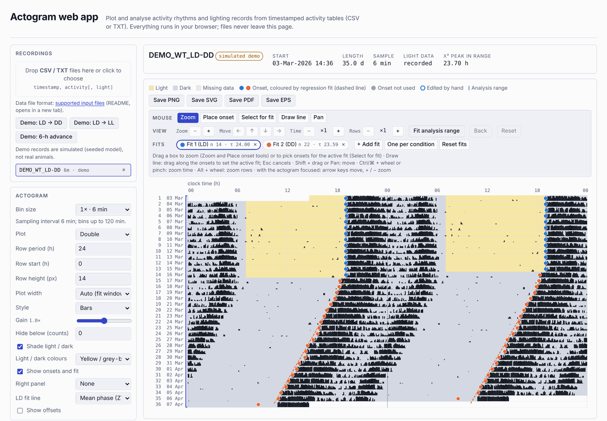
The main screen with the "LD → DD" demo: control panels on the left, then the summary bar, legend and save buttons, the view/tool bar and the actogram. The analysis tabs follow below the actogram.
| Area | Contents |
|---|---|
| Left panels | Recordings, Actogram (plot settings), Lighting, Analysis range, Onset detection, Regression fits |
| Summary bar | Recording name, start, length, sampling interval, light data source, χ² peak period in the analysis range |
| Actogram area | Legend, Save PNG / SVG / PDF / EPS, the view/tool bar (Mouse, View and Fits rows) and the actogram |
| Analysis tabs | Periodogram, Wavelet, Activity profile, Onsets & fits, Phase, Daily activity, Lighting record, All files, File info, Methods |
The page follows the light or dark theme of your operating system. Exported figures always use a light palette.
Loading recordings
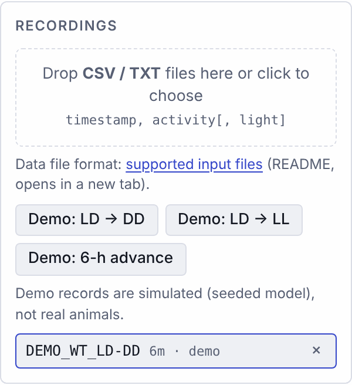
- Drop CSV/TXT files onto the drop zone, or click it to choose files. Several files can be opened at once, and they are listed in the order chosen.
- Click a recording in the list to show it. Each recording keeps its own settings: bin size, lighting, analysis range, onset edits and fits.
- × removes a recording.
- The supported input files link opens the format description.
- The three Demo buttons load simulated recordings: LD → DD, LD → LL and a 6-h phase advance.
Reading and adjusting the actogram
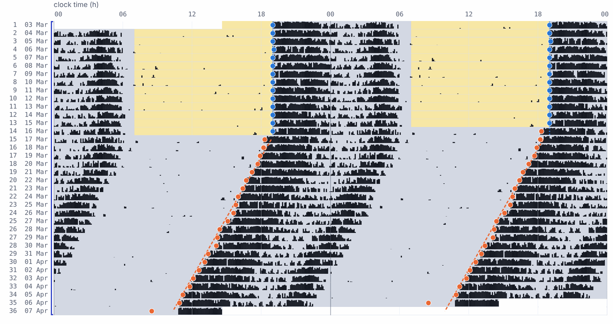
Double-plotted actogram of the "LD → DD" demo. Yellow = light, grey-blue = dark. Blue dots are the onsets of the LD fit; orange dots and the dashed line are the onsets and regression of the DD fit (τ ≈ 23.6 h).
- Rows are consecutive periods of the row period (24 h by default), labelled with the row number and date. In a double plot each row shows two periods, and the right half of a row is repeated as the left half of the next row.
- Bars are proportional to activity. Shading shows light and dark, and pink shows missing data.
- Markers: filled dots are onsets coloured by their regression fit, grey dots are onsets not used in any fit, rings are onsets edited by hand, and diamonds (optional) are offsets.
- Lines: dashed lines are regression fits. LD fits are drawn by default as a dotted line at their mean phase. Thin dotted lines are guide lines drawn with Draw line.
- The blue bracket at the left marks the analysis range. Hover over the actogram to see the date, time, activity and light under the pointer.
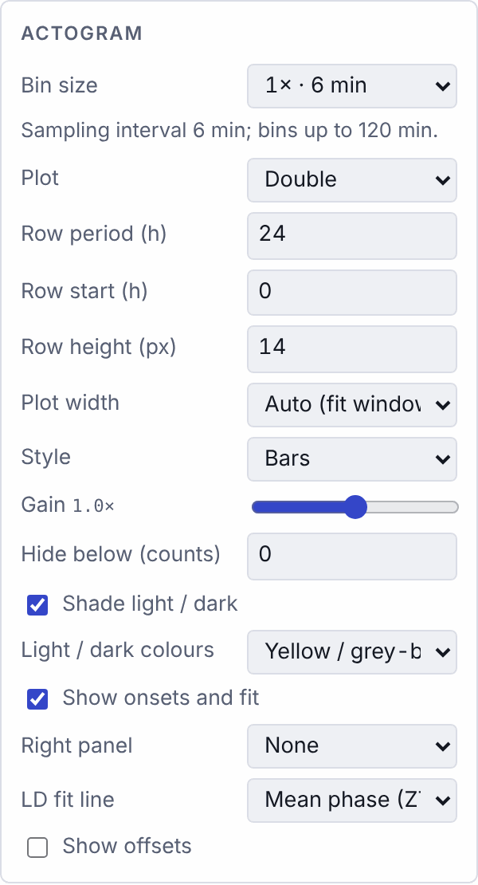
| Setting | Meaning |
|---|---|
| Bin size | Multiple of the sampling interval, up to 120 min |
| Plot | Single, Double (default) or Triple |
| Row period / Row start | Length of a row, and the clock time at which rows start |
| Row height, Plot width | On-screen size; custom width 720–2880 px |
| Style | Bars, grey heat map, or colour heat maps (viridis, magma, cividis) |
| Gain, Hide below | Scaling, and the low-count cut-off |
| Shade light / dark, Light / dark colours | Shading on or off; yellow / grey-blue or white / light grey |
| Show onsets and fit, Show offsets | Markers and regression lines |
| Right panel | Total activity of each row (bars, line or numbers) |
| LD fit line | Mean phase (ZT) line, or a regression line |
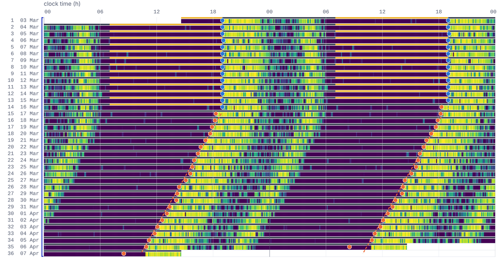 Heat map (viridis). Light and dark are shown by the LD bar along the top of each row. |
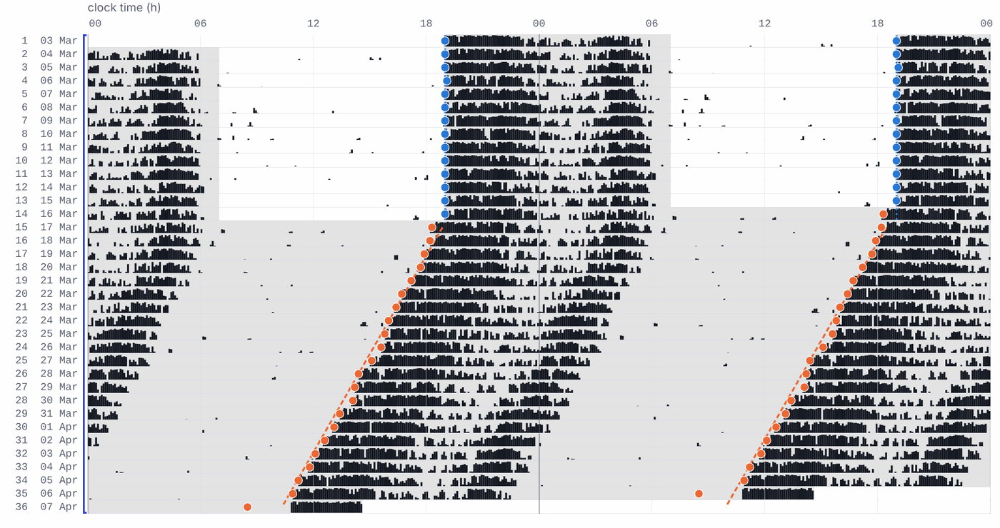 Bars with the White / light grey light/dark colours. |
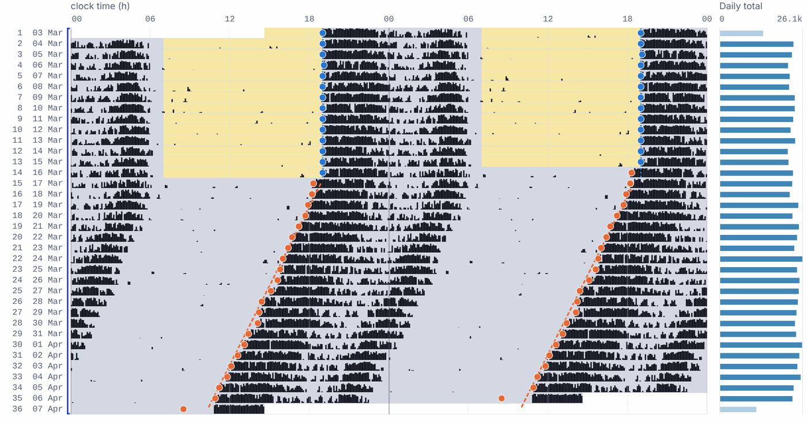
Right panel → Daily total (bars): the total activity of each row, aligned with the rows. Partial rows are faded.
Lighting
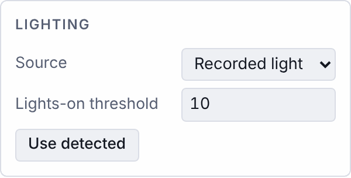
Lighting controls the shading, the analysis-range presets, the automatic one-fit-per-condition regressions and the ZT/CT phase. Choose the Source:
- Recorded light: a bin is light when its mean light value is at or above the Lights-on threshold. Use detected copies the detected regime into an editable schedule.
- Schedule: enter the lighting conditions by hand (see Lighting schedule).
- None: no lighting information.
Analysis range
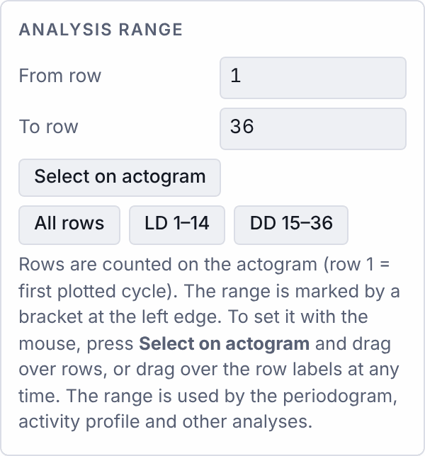
The analysis range is the set of actogram rows used by the periodogram, activity profile, wavelet (by default), daily activity, ψ, α and the automatic fits. It is marked by the blue bracket at the left of the actogram.
- Type From row and To row.
- Click a preset: All rows, or one button for each lighting condition.
- Press Select on actogram and drag over rows.
- At any time, drag over the row labels at the left edge of the actogram.
Zooming, moving and editing onsets
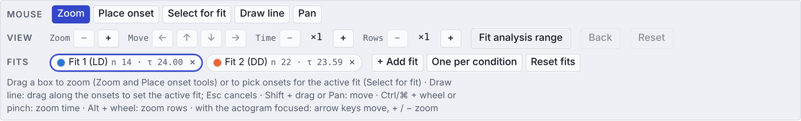
The view/tool bar above the actogram: Mouse tools, View controls and Fits.
A bar above the actogram is always shown. It has three rows.
- Mouse selects what the mouse does on the actogram: - Zoom (the default) is view only: drag a box to zoom into that area, and clicks do not change anything. - Place onset: click a row to place that cycle's onset, or Shift-click to delete the nearest onset. Dragging a box still zooms. The Edit onsets button in the left panel switches between this tool and Zoom. A click is assigned to the cycle whose onset (detected or expected) is nearest, not simply to the row clicked. An onset just after midnight that belongs to the previous row's cycle therefore replaces that cycle's onset, even when you click it in the left half of the next row of a double plot. - Select for fit: click onsets, or drag a box around them, to add them to the active regression fit or remove them. - Draw line: drag a line along a band of onsets, from one row to a later row, for example along a free run. The active fit then consists of the rows the line crosses. In each of those rows, the onset is searched only within Line tolerance ± (h) (Onset detection panel, default 2 h) of the line, instead of around the previous onset. This keeps the fit on the band you meant even where automatic tracking jumps to another bout. The line is shown as a thin dotted line in the fit's colour, and the fit is marked "line" (⟋ on its chip). Clear line in the Fits row removes the line; the fit keeps its rows. Hand-placed onsets still take priority. A line within a single row, or one implying a period below 0.5 or above 1.5 times the row period, is rejected with a message. - Pan: drag to move the zoomed view. Shift + drag pans with any tool.
A flat box zooms the time axis only, and a narrow box zooms the rows only. Esc cancels a box. 2. View changes the magnification and moves the view: - Zoom − / + changes the magnification of both axes. Time − / + zooms only the time axis (up to ×48), and Rows − / + only the rows (up to ×8). - Move ← ↑ ↓ → moves the view. - Fit analysis range shows exactly the analysis-range rows. Back returns to the previous zoom, and Reset returns to the whole record. - Keyboard and wheel: after clicking the actogram, the arrow keys move and + / − zoom. Ctrl/⌘ + wheel (or a pinch) zooms time, Alt + wheel zooms rows, and the wheel scrolls when zoomed.
Scroll indicators at the bottom and right edges show where you are. 3. Fits shows one chip per regression fit. - Click a chip to make that fit active, or × to remove it. - + Add fit, One per condition and Reset fits work as in the Regression fits panel.
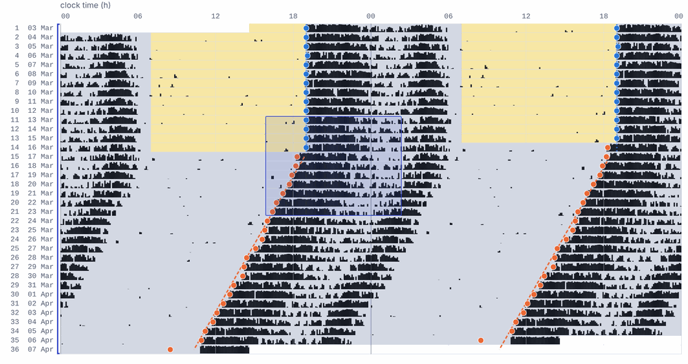 Dragging a zoom box. A flat box zooms the time axis only, and a narrow box zooms the rows only. |
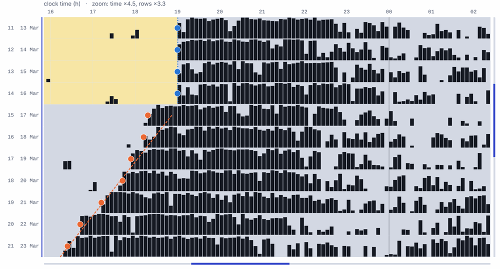 The zoomed view. Scroll indicators at the bottom and right edges show where you are. |
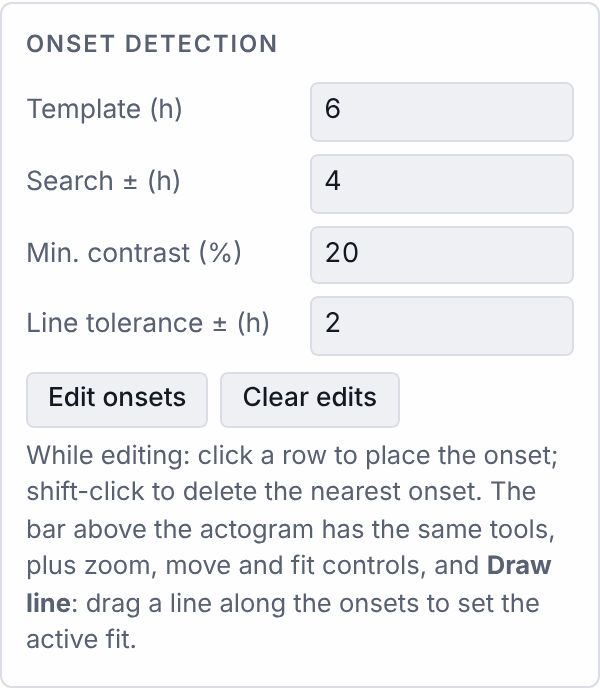
Onset detection (left panel): Template (h) is the width W of the step template (default 6 h), Search ± (h) the window around the onset predicted from the previous cycle (±4 h), Min. contrast (%) the minimum score as a percentage of mean activity (20 %), and Line tolerance ± (h) the search window around a line drawn with Draw line (±2 h). Edit onsets switches to the Place onset tool, and Clear edits discards all hand edits. See Onset and offset detection for the algorithm.
Edited onsets are drawn as rings. The figure export always shows the whole record, whatever the zoom.
Regression fits and phase
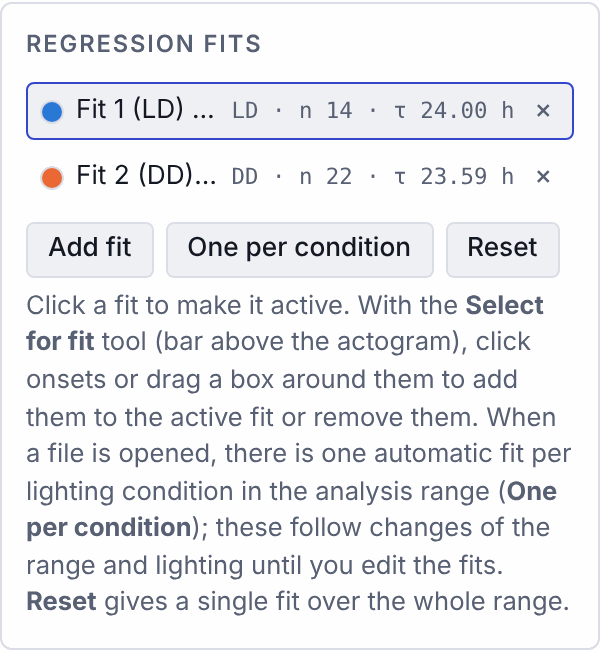
A regression fit is a least-squares line of onset time against cycle number. Its slope is the period: τ under DD or LL, or the cycle length T under LD. Up to six fits can be defined per recording, each with its own colour. The active fit (highlighted) receives the onsets you choose with Select for fit or Draw line.
Draw line: dragging a line along the free-running onsets under LL ("LD → LL" demo). |
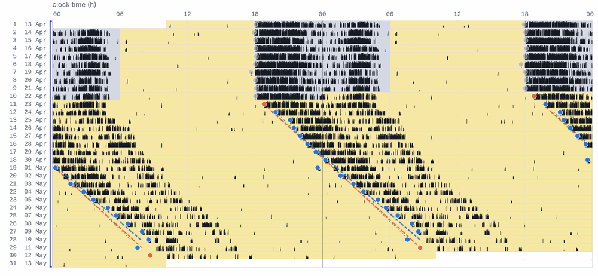 The result: the active fit follows the drawn band (τ ≈ 24.8 h). The guide is shown as a thin dotted line. |
- Default: when a file is opened, the fits are set to One per condition, with one automatic fit for each lighting condition (for example LD and DD) that has onsets in the analysis range. These fits follow changes of the analysis range and the lighting settings until you edit the fits by hand. Reset gives a single fit over the whole range. Without lighting information there is a single fit.
- Choosing onsets with the mouse: choose the Select for fit tool in the bar above the actogram. Click an onset, or drag a box around several, to add them to the active fit. Onsets that are all in the active fit already are removed from it. Onsets not used in any fit are drawn in grey and dimmed in the table. To let the app pick the onsets, use Draw line instead and draw a line along them (see above).
- Protection against wrong fits: each regression uses cycle numbers derived from the onset times, not from the rows the onsets sit in.
- Starting from the median onset-to-onset interval, each onset gets the cycle number n = round((t − t₀)/τ), anchored so that n matches the row numbers of most onsets. τ is then refined from the fitted slope, and the process is repeated.
- An onset that sits in a neighbouring row is therefore counted in its true cycle. Examples are an onset placed in the left half of the next row of a double plot, or one that is 24 h off its row.
- If two onsets of the same fit fall in the same cycle, only the one closer to the line is used. The other is drawn in grey and marked "excluded: same cycle" in the onset table. Onsets counted in a cycle other than their row's are marked "cycle of row …".
- Several regressions: in the Regression fits panel or the Fits row of the bar above the actogram, Add fit creates a new fit and makes it active, and clicking a fit makes it the active one. One per condition creates one fit for each lighting condition in the analysis range, for example one for LD and one for the following DD. This lets you, for example, fit the early and late parts of a free run separately, or exclude transients after a transfer.
- Results: the Onsets & fits tab lists, for each fit, τ ± SE, r², the number of onsets and the fitted phase, plus a table of all onsets. Fits and onsets can be saved as CSV.
- Wavelet analysis: the Wavelet tab shows how the period changes over time, for example the transition from LD to DD or re-entrainment after a phase shift.
- Power map: a Morlet wavelet power map with days on the x axis and period on the y axis, with lighting shown under the plot.
- Ridge: the white line marks the period with the highest power at each moment.
- Edge effects: the pale cone of influence near the record edges is excluded from the summaries.
- Summaries: the mean ridge period is given for the whole series, for each regression fit (next to τ from onsets and the χ² peak) and for each lighting condition.
- Options: the period range, the data used (analysis range or whole record) and the colour scale can be changed. Results can be saved as CSV.
- Activity profile per fit: the Activity profile tab also folds the rows of each regression fit.
- Default period and x axis:
- under LD, the fit is folded at the LD cycle length T, with ZT on the x axis (ZT0 = lights-on);
- under DD or LL, it is folded at the fit's free-running period τ, with circadian time on the x axis (one cycle = 24 CT hours, CT0 = the free-run 0° reference of the Phase tab).
- Changing the period: Period can be set instead to the fit's periodogram peak, the row period or a custom value.
- Changing the x axis: X axis → Hours from reference shows plain hours.
- Results: a table gives each fit's period, its source, its peak phase and % activity in dark, and each fit gets its own profile chart.
- Periodogram per fit: the Periodogram tab also analyses the rows covered by each regression fit, using the same method, period range and α. A table compares each fit's peak period with its τ from onsets, and a small periodogram is drawn for each fit in its colour. A fit needs at least twice the longest tested period of data.
- Phase results: the Phase tab is dedicated to phase.
- Cards and summary table: one card per fit with its phase in ZT/CT hours and degrees, τ, and the circular statistics of its onset phases. The summary table also gives:
- the mean vector length R (1 = identical phases, 0 = scattered);
- the circular SD in hours, √(−2 ln R);
- the Rayleigh test p-value;
- the 0° reference that was used, as a date and time.
- Phase differences: consecutive fits (for example LD → DD) are compared by their phase difference, wrapped to ±180° and shown in degrees and circadian hours.
- Clock plot: each fit's onset phases sit on their own ring, with 0° at the top and phase running clockwise. An arrow marks the mean vector, and LD rings show the light and dark parts of the cycle.
- Phase-versus-row plot: the phase of every onset across the record, with each fit's fitted phase as a dashed line. Transients after a lighting change show up clearly.
- Export: results can be copied as tab-separated text, to paste into a spreadsheet, or saved as CSV.
- LD fits on the actogram: by default, fits under LD are drawn as a dotted line at their mean phase (ZT). Choose LD fit line → Regression line in the Actogram panel to draw them like DD/LL fits.
- Phase:
- Under LD, phase is zeitgeber time, where ZT0 is lights-on.
- Under DD or LL, phase is circadian time computed from the free-running period of the fit for that condition. The 0° reference can be the projected ZT0 of the preceding LD condition (the default; the last lights-on at or before the transfer), the start of the condition, 00:00 of the first recording day, or the start of actogram row 1.
- Phase can be shown in hours (ZT/CT) or in degrees (0–360°).
Zoom applies only while editing. The normal view and the figure export always show the whole record.
Analysis tabs
The tabs below the actogram analyse the current recording. Most use the analysis range, and several also give one result per regression fit. Every chart has small PNG / SVG / PDF / EPS links in its top-right corner, and most tabs have a Save CSV button.
Periodogram
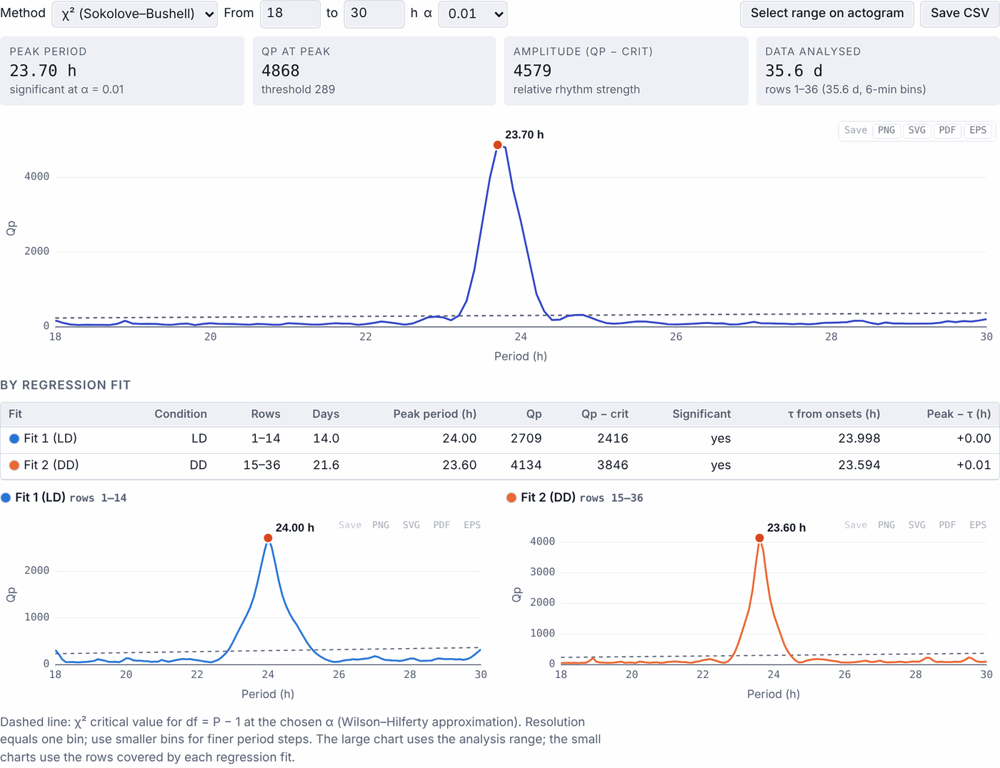
χ² periodogram of the analysis range with its significance line, followed by the table and small periodograms of each regression fit.
Choose the Method (χ² Sokolove–Bushell or Lomb–Scargle), the period range (From … to, 18–30 h by default) and α (0.05, 0.01 or 0.001). Each fit's rows are analysed too, and the table compares each fit's peak period with its τ from onsets.
Wavelet
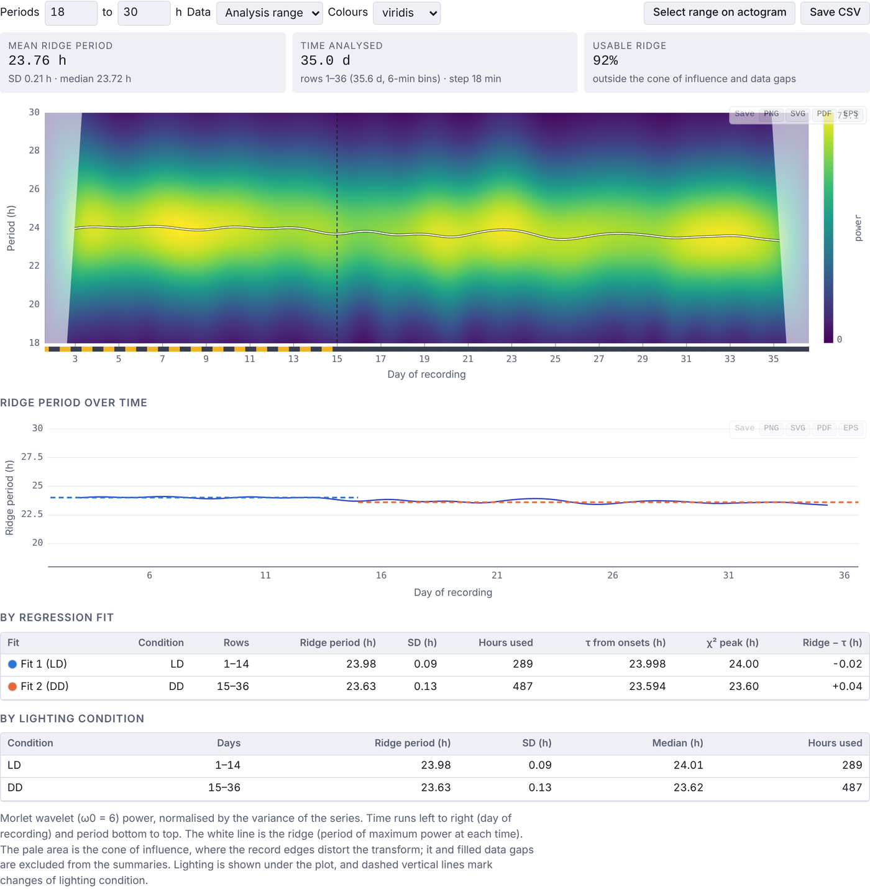
Morlet wavelet power map with the ridge (white line), the cone of influence (pale edges) and the lighting strip. Below are the ridge period over time with each fit's τ, and summaries by fit and by lighting condition.
The wavelet shows how the period changes over time, for example at a transfer from LD to DD or during re-entrainment. Periods, Data (analysis range or whole record) and Colours can be changed.
Activity profile
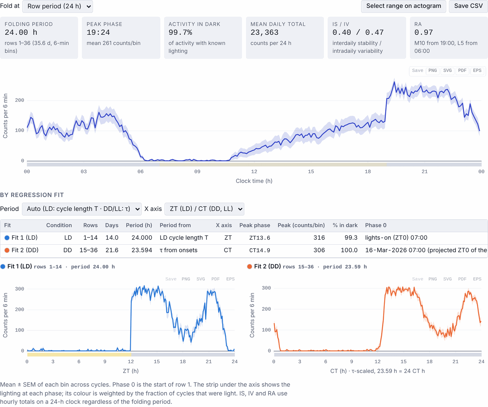
Activity profile (mean ± SEM) of the analysis range, and one profile for each regression fit.
The analysis range is folded at the row period, the periodogram peak or a custom period. Each fit is folded at T with ZT on the x axis under LD, or at its τ with CT on the x axis under DD or LL.
Onsets & fits
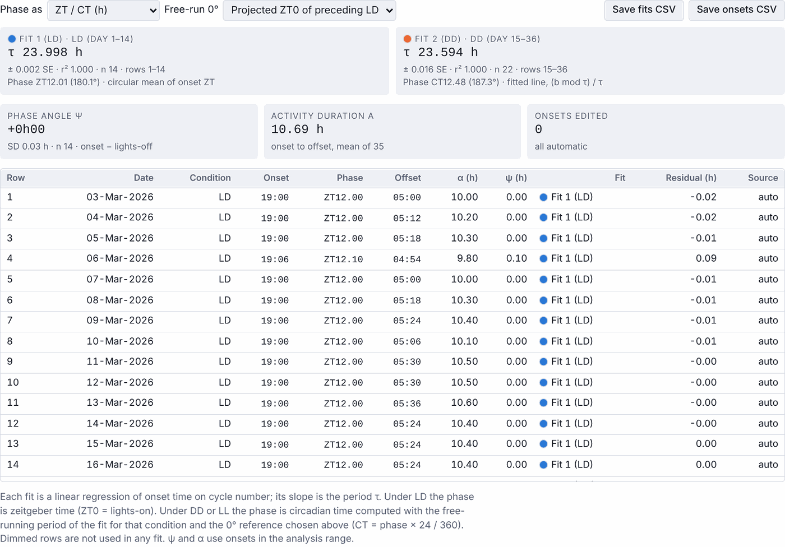
Fit cards (τ ± SE, r², n, phase), the ψ and α summaries, and the table of all onsets.
The onset table lists, for every cycle, the date, condition, onset, phase, offset, α, ψ, fit, residual and source (auto, edited, deleted or guided by line). Use Save fits CSV and Save onsets CSV to export.
Phase
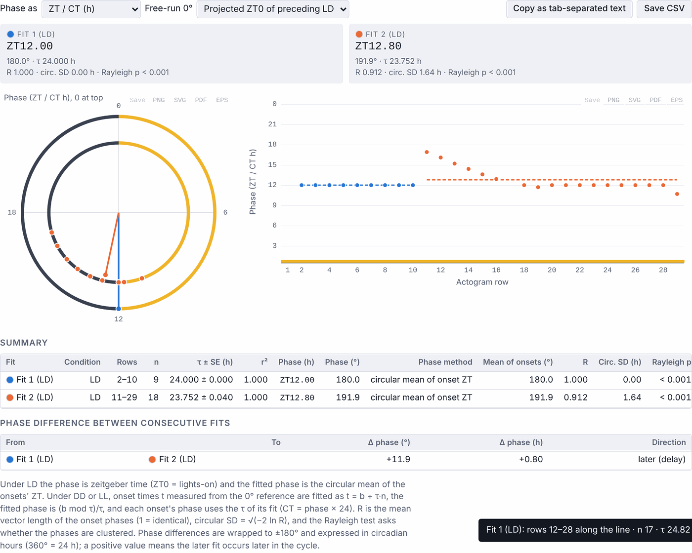
Phase tab of the "6-h advance" demo: phase cards, summary table, phase differences, clock plot and phase-versus-row plot.
Phase is ZT under LD and CT under DD or LL, shown in hours or degrees. The tab gives circular statistics (R, circular SD, Rayleigh test) and the phase differences between consecutive fits. The clock plot shows each fit's onset phases on its own ring, and the phase-versus-row plot shows transients after lighting changes.
Daily activity, Lighting record, All files and File info
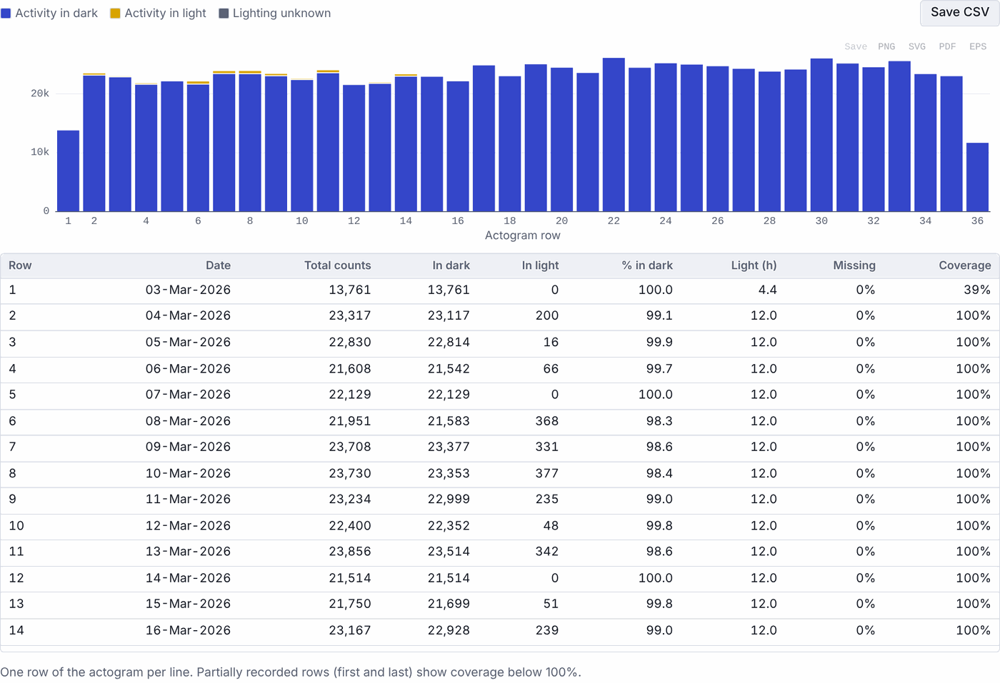 Daily activity: total counts per row, split into dark and light. |
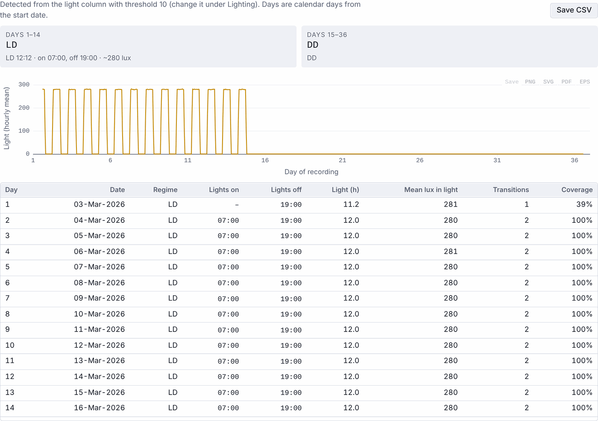 Lighting record: detected conditions, hourly light and a day-by-day table. |
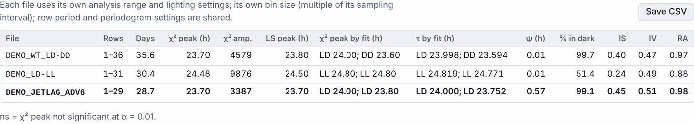 All files: one row per recording with χ² and Lomb–Scargle peaks, ψ, % in dark, IS, IV and RA. |
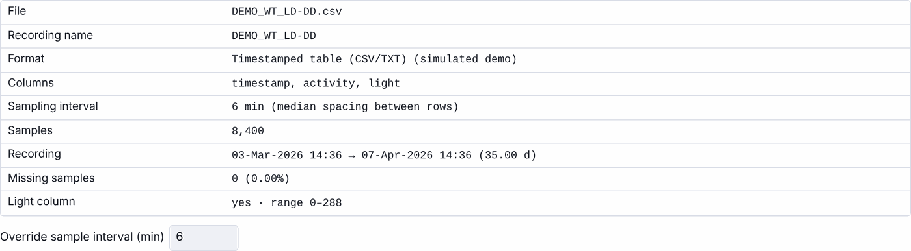 File info: file details, text encoding (can be changed) and the sample-interval override. |
Methods documents every algorithm used by the app.
Saving figures and tables
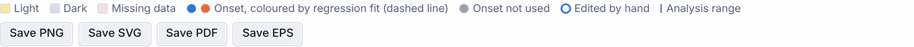 Legend and save buttons above the actogram. |
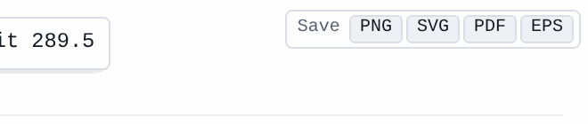 Save links on a tab chart. |
- Save PNG / SVG / PDF / EPS above the actogram save the whole record, whatever the zoom, at the chosen plot width. Each chart in the tabs has its own save links.
- Tables are saved with the Save CSV buttons in the tabs. The Phase tab can also copy its table as tab-separated text.
- Saved files are named after the recording, for example
DEMO_WT_LD-DD_actogram.pdforDEMO_WT_LD-DD_onsets.csv. - See Figure export for the details of each format.
Example: re-entrainment after a phase shift
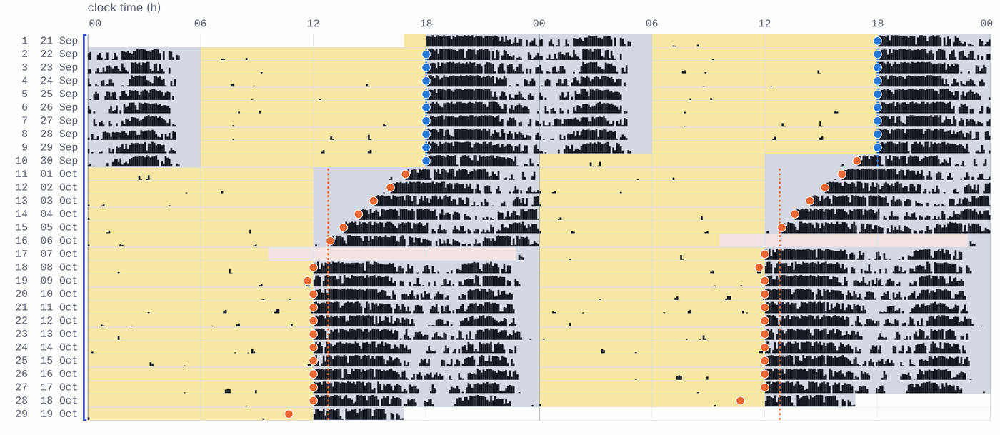
"6-h advance" demo: the LD cycle is advanced by 6 h on day 11, and the onsets re-entrain over several days. The gap is missing data.
Enter the shift as a new LD condition starting at the new lights-on (light first). Then follow the daily shift of ZT in the phase-versus-row plot of the Phase tab, and the temporary change of period in the Wavelet tab.
Lighting schedule
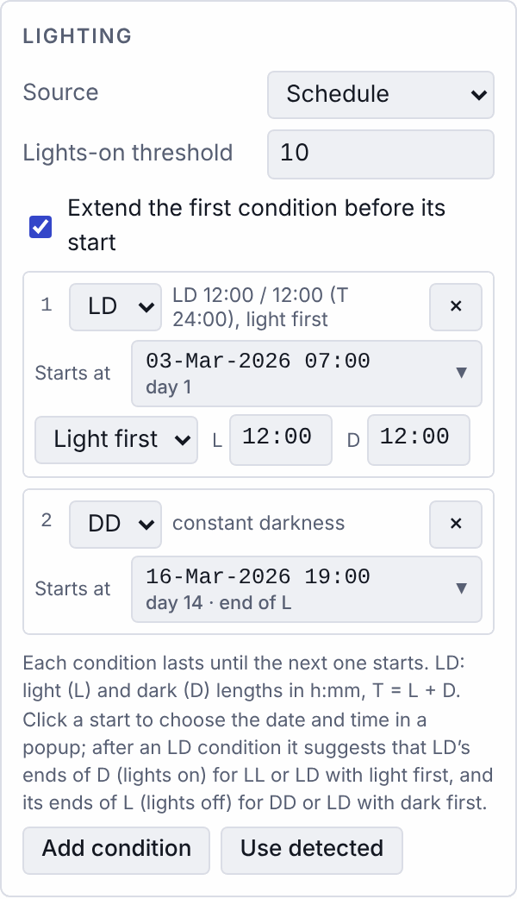 The schedule editor: an LD condition followed by DD. |
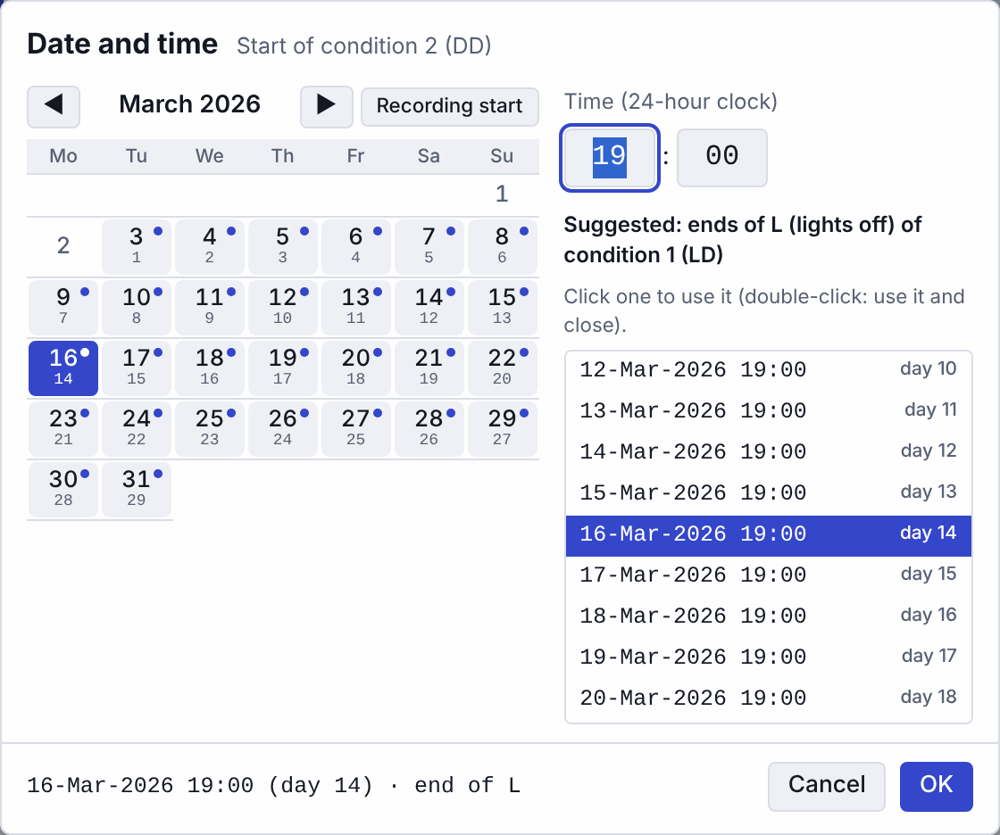 The date and time picker, with the suggested lights-off times of the preceding LD. |
When a file has no light column, or to describe the lighting regime yourself, choose Lighting → Source → Schedule. The schedule is a list of conditions, and each condition lasts until the next one starts.
- Condition: LD (light/dark cycle), LL (constant light) or DD (constant darkness).
- Starts at: the date and clock time at which the condition begins, in the time of the data file. Click the field to open the Date and time popup:
- a month calendar (◀ ▶ change the month, Recording start jumps to the first month of the recording). Days of the recording are shaded and numbered with their day of recording, and days with a suggested time are marked with a dot;
- Time (24-hour clock): hour and minute fields (the mouse wheel over a field steps it by 1 h or 1 min);
- after an LD condition, the list of suggested start times (see below): click one to use it, or double-click to use it and close the popup;
- OK (or Enter) applies the date and time; Cancel, Esc or a click outside the popup closes it without changes.
The field shows the chosen date, time and day of recording, and "end of L" or "end of D" when the start is one of the suggested boundaries. - LD settings: - Light first / Dark first: whether the cycle begins with the light or the dark phase at its start time. - L and D: the lengths of the light and dark phases in h:mm (decimal hours such as 11.5 are also accepted). The cycle length is T = L + D, so non-24-h cycles (T-cycles) can be entered. While an L or D field has the focus, the mouse wheel changes it by 15 min (with Shift, by 1 min). - Suggested start times: when the preceding condition is LD, the popup lists the boundaries of that LD cycle: - for LL, or LD with light first: the ends of D (lights-on times); - for DD, or LD with dark first: the ends of L (lights-off times).
Choosing an entry sets the start date and time. For example, a transfer to DD normally starts at the last lights-off of the LD, and a transfer to LL at a lights-on. When the type of a condition (or light/dark first) is changed, its start moves to the nearest matching boundary within one cycle, and a message shows the new time. Phase shifts of the LD cycle (for example a 6-h advance) are entered as a new LD condition whose start is a new lights-on time (light first) or an extended dark phase (dark first). - Extend the first condition before its start (on by default): times before the first condition follow the first condition. When it is off, they have no lighting information and are left unshaded. - Add condition appends a condition: after an LD, a DD starting at a lights-off about a week later; otherwise an LD with the last L and D. × removes a condition. - Use detected (files with a light column) fills the schedule from the light/dark regime detected in the light column. The start of each LL or DD condition is placed at the actual last lights-on or lights-off in the data.
The schedule is used for the shading of the actogram, the LD bar of the heat maps, the analysis-range presets, the one-fit-per-condition regression fits and the ZT/CT phase (ZT0 = lights-on of the LD cycle).
Supported input files
The app reads plain-text tables with one row per sample. Use Drop CSV / TXT files here or click to choose in the Recordings panel, or drop files anywhere on the page. Several files can be loaded at once.
- Encoding and line endings: UTF-8 or plain ASCII, with or without a byte-order mark. Windows (CRLF), Unix (LF) and old Mac (CR) line endings are all accepted.
- Problems: if a file cannot be read, a message names the file and the problem. Other files in the same drop are still loaded.
Timestamped table (.csv or .txt; comma-, tab- or semicolon-separated)
timestamp,activity,light
2026-03-03 14:36,12,250
2026-03-03 14:42,0,250
2026-03-03 14:48,,0
2026-03-03 15:00,7,0
- Column 1, timestamp:
YYYY-MM-DD HH:MMorYYYY-MM-DD HH:MM:SS. - A
Tmay replace the space (2026-03-03T14:36:00), and/may replace-in the date. - Anything after the time, such as a time-zone suffix, is ignored.
- Column 2, activity: the activity count, for example wheel revolutions or infrared beam breaks. Empty, negative or non-numeric values are treated as missing data.
- Column 3, light (optional): the light level, for example in lux. It is used for light/dark shading and the Lighting record. If the column is absent or empty, the recording has no light data, and lighting can be entered as a schedule instead.
- Layout:
- Columns may be separated by commas, tabs or semicolons, and values may be enclosed in double quotes.
- A single header line is allowed. Rows that do not start with a timestamp are skipped, and extra columns after the third are ignored.
- Comments and blank lines: in
.txt(and.csv) files, lines that start with#are comments and are ignored, and blank lines are ignored too. Both may appear anywhere in the file. - Recording name: taken from a comment line of the form
# Recording name: foo bar baz, if present.foo bar baz(everything after the colon, with surrounding spaces removed) then replaces the file name as the recording name. The words "Recording name" are not case-sensitive. If the line appears more than once, the first one is used. The recording name is shown in the file list and on the plots, and it is used in the names of saved files; there, characters that are not allowed in file names (spaces, slashes, colons, brackets and so on) are replaced by "_", while letters and digits of any script are kept (for example,Mouse_A12 (Per KO)givesMouse_A12_Per_KO_actogram.png). - Sampling interval: taken as the median spacing between consecutive rows.
- Rows are sorted by time and placed on a regular grid, so missing rows become missing data.
- Apart from gaps, rows should be evenly spaced, for example every 1 or 6 min.
- Default recording name: the file name without its extension, when there is no
# Recording name:line. - Languages and text encoding: recording names and comments may be written in any language, including Chinese (simplified and traditional), Japanese and Korean, for example
# Recording name: 小鼠 实验组 A-1,# Recording name: マウス 第1群or# Recording name: 생쥐 실험군 1. UTF-8 (with or without a byte-order mark) is recommended; UTF-16 with a byte-order mark is also read. Files that are not valid UTF-8 are checked against the common legacy encodings (GB18030, Big5, Shift_JIS, EUC-JP and EUC-KR), and a message names the encoding that was used. A very short name in a legacy encoding (for example a few kanji without kana) can be ambiguous: if the name or comments look garbled, choose the encoding under Text encoding in the File info tab, and the file is read again with all its settings kept. - Requirements: at least 3 rows with timestamps.
Example .txt file with comments, a recording name and tab-separated columns:
# Recording name: Mouse_A12 (Per KO)
# Wheel running, cage 3, LD 12:12 (lights on 07:00)
timestamp activity light
2026-03-03 14:36 12 250
2026-03-03 14:42 0 250
2026-03-03 14:48 3 0
This file is shown as the recording Mouse_A12 (Per KO).
Time handling
Times are treated as local clock times, with no time-zone or daylight-saving correction. Day 1 of the actogram is the calendar day of the first sample.
Also accepted: text-based .AWD files
Text-based .AWD files can also be opened. The format is recognised from the file content, not the extension: a file whose first or second line, ignoring blank lines and # comments, starts with a timestamp is read as a table, and any other file as .AWD.
An .AWD file has a 7-line header, followed by one activity value per line, optionally followed by a light value.
- Header lines: name, start date (dd-mon-yyyy), start time (HH:MM), sample interval in minutes × 4, age, ID and sex.
- Data values: values below 0 are missing.
- Recording name: line 1 (the name) is used as the recording name, with surrounding spaces removed; it may be in any language, including Chinese, Japanese and Korean, and the text encoding is handled as for timestamped tables (see Languages and text encoding above). If line 1 is empty, the file name without its extension is used.
The format is described in Brown et al. 2020 (Support Protocol, Materials, item 10); see also the MRC Harwell sleep-tracking repository and the GGIR Cookbook in References. The interval can be corrected in the File info tab if needed.
Methods
The Methods tab in the app documents every algorithm. In brief:
- Binning: the bin is a whole multiple of the sampling interval (default 1×, maximum 120 min), set separately for each file. Counts are summed. Bins with less than 50% valid samples are treated as missing, and partially covered bins are scaled up to a full bin.
- χ² periodogram: Qp = Σ nₕ(Mₕ − M)² / [Σ(X − M)² / N], with missing data allowed. The critical value is the χ² quantile with P − 1 degrees of freedom (Wilson–Hilferty approximation).
- Onsets and offsets: a step-template detector with cycle-to-cycle tracking; see Onset and offset detection below.
- Regression and period: each fit is a least-squares line of onset time against cycle number, and its slope is the period τ.
- Phase under LD: zeitgeber time, ZT = time since the most recent lights-on, or ZT / T × 360° in degrees. The phase of an LD fit is the circular mean of its onsets' ZT.
- Phase under DD/LL: onset times t measured from the 0° reference are described by t = b + τ·n. The phase of an onset is ((t − reference) mod τ) / τ, shown as CT (× 24) or in degrees. The fitted phase of a regression is (b mod τ) / τ.
- Circular statistics: for the onset phases θ of a fit, R = |mean of (cos θ, sin θ)|, circular SD = √(−2 ln R), and the Rayleigh test uses Z = nR² with Zar's p-value approximation. Phase differences between fits are wrapped to ±180° (360° = 24 circadian hours).
- Wavelet: continuous wavelet transform with a Morlet wavelet (ω0 = 6) computed by FFT (Torrence & Compo 1998). Power is normalised by the variance of the series. The ridge is refined between grid periods by parabolic interpolation. Points inside the cone of influence (e-folding time √2·s from either end) and filled gaps are excluded from the summaries.
- Lighting schedule: at time t within an LD condition with lights-on at t₀ (the start, or the start + D for dark first), the phase in the cycle is (t − t₀) mod T, and the bin is light when this is below L. LL is light and DD dark throughout.
- ψ and α: ψ is the onset minus the nearest lights-off. α is the offset minus the onset.
Figure export
The plots are drawn with the HTML Canvas 2D API. For vector export the same drawing code is run against a recording context (src/vector.js) that implements the part of the Canvas API used by the app, and the recorded shapes are written out as SVG, PDF or EPS. Nothing is uploaded; the file is produced in the browser.
- PNG: bitmap at twice the on-screen size.
- SVG: SVG 1.1. Lines, bars, markers and text stay as vector objects, and text stays editable (fonts: Public Sans / IBM Plex Mono / Archivo, with generic fallbacks). The wavelet power map is a raster image embedded inside the SVG.
- PDF: single-page PDF 1.4 at the plot's size (1 px = 0.75 pt). Transparency is kept. Text uses the standard PDF fonts Helvetica and Courier, which every PDF viewer provides, so no font is embedded and text stays selectable and editable (for example in Adobe Illustrator or Inkscape). Content and images are compressed with Flate when the browser supports
CompressionStream. - EPS: Encapsulated PostScript (EPSF-3.0, PostScript level 2) for journals, LaTeX and older layout or drawing programs. Uses the same standard fonts as the PDF. PostScript has no transparency, so semi-transparent colours are blended with white.
- Fonts and special characters (PDF and EPS): the standard fonts cover Latin-1 characters only (including ·, °, ×, ² and, in PDF, –). Greek letters and a few symbols are written out in ASCII: Greek letters become their names (τ → "tau", χ → "chi", ψ → "psi", α → "alpha"), "−" becomes "-" and "≥" becomes ">=". Text with other characters, such as a recording name in Chinese, Japanese or Korean, is placed as a high-resolution (4×) picture of the text, so it looks the same as on screen but cannot be edited as text; in EPS the picture has a white background. The PDF document title keeps the full recording name. SVG keeps all text as text. For publication-quality typography, export SVG or PDF and restyle the text in a drawing program.
- Consecutive rectangles of the same colour are merged into one shape to keep files small.
Onset and offset detection
Activity onsets and offsets are detected automatically on the binned activity of the whole record, one per actogram row (cycle), using the parameters in the Onset detection panel. The detector is written for nocturnal running-wheel data, where activity starts abruptly and is followed by several hours of sustained activity.
Input and notation
- x(t) is the binned activity (counts per bin) at absolute bin t, using the bin size chosen for the actogram. Missing bins are excluded from every mean below.
- A window mean is reported as missing when fewer than 50% of its bins have data.
- The parameters, converted to whole bins:
| Symbol | Meaning | Panel setting | Default |
|---|---|---|---|
| W | template width | Template (h) | 6 h |
| H | search half-width | Search ± (h) | ±4 h |
| c | minimum contrast | Min. contrast (%) | 20 % |
| P | row period | Row period (h) in the Actogram panel | 24 h |
| m̄ | mean activity of all valid bins in the record | – | – |
Step 1: template score. For every bin t, the step-template score compares the mean activity just after t with the mean just before it:
S(t) = mean x[t, t + W) − mean x[t − W, t)
S(t) is largest where a long stretch of rest is followed by a long stretch of activity, which is where a nocturnal activity onset lies. Short bouts during the rest phase barely change S, because each mean covers W hours.
Step 2: search window, with tracking from cycle to cycle. - For the first row, or any row reached before an onset has been found, the whole row is searched, i.e. the bins from the row start to row start + P. - For every later row, the search covers ± H around the onset predicted from the previous cycle: previous onset + P. - The window is clipped so that both template halves fit inside the record. - Because the prediction uses the row period P, a free-running rhythm drifts by (τ − P) per cycle. The search window must be wide enough for this drift, and the default ±4 h covers typical free-running periods.
Step 3: accept or reject. The candidate onset is the bin with the largest S(t) in the search window. - The candidate is accepted only if S exceeds c × m̄ (with c = 20 %, the after-minus-before contrast must exceed 20 % of the mean activity of the record). - Otherwise the row has no onset, for example when there is no rhythm, too little activity, or missing data. - When a row has no onset, tracking continues from the predicted time (previous onset + P), so a single empty row does not break the sequence.
Step 4: refinement. The maximum of S can lie slightly before the first sustained running, because a few early counts already raise the "after" mean. The onset is therefore moved to the first bin u within ± 1 h of the candidate where both of the following hold: - x(u) ≥ 0.4 × A, i.e. the bin itself is active, and - the mean of x over [u, u + 30 min) ≥ 0.4 × A.
Here A = mean x[onset, onset + W) is the activity level in the template window after the candidate. If no bin meets both conditions, the candidate is kept. The reported onset time is the start of that bin, so its precision is one bin.
Step 5: offset. Using the same level A, the offset is the first bin v that satisfies all of the following: - v is at least 2 h after the onset; - v is earlier than onset + P − 1 h; - the mean of x over the next 3 h, [v, v + 3 h), is below 0.15 × A.
The offset is therefore the start of the first sustained rest, of 3 h or more, after the active phase. A short pause inside the active phase does not end it. If no such bin exists, for example under LL with scattered activity, the row has no offset. Offsets are computed for hand-edited onsets too.
Step 6: hand edits. Onsets placed or deleted on the actogram replace the automatic result for that cycle. The Place onset tool sets an onset, and Shift-click deletes the nearest one. - An edited onset is used for tracking the following cycles, so correcting one onset can also correct the next ones. - Deleted onsets are shown as "deleted" in the onset table and are not used in fits. - Clear edits returns to the automatic result.
Derived values
- τ (period): the slope of the least-squares regression of onset time on cycle number, for the onsets of each regression fit.
- ψ (phase angle of entrainment): onset minus the nearest lights-off (a light → dark transition) within ± 6 h. Negative values mean activity starts before lights-off.
- α (activity duration): offset minus onset.
- ZT / CT phase of each onset: see the Phase methods above.
Practical notes
- Template width: shorter templates (3–4 h) follow animals with short or fragmented active phases better. Longer templates are more robust to bouts during the rest phase.
- Bin size: larger bins (for example 6–10 min) make detection more robust; smaller bins give finer timing.
- Missing data and recording ends: onsets are not detected where either template half is less than half covered by data, so near gaps and at the very start and end of the record. The first and last rows are often affected.
- Free-running rhythms: if onsets jump between cycles, set the row period close to τ (a τ-plot) or widen the search window.
The automatic onset detection is a convenience. Check the detected onsets on the actogram and correct them where needed before you report τ or ψ.
Demo data
demo_data/ and the Demo buttons provide simulated recordings generated by a seeded model of nocturnal wheel running (src/gen.js). They are not measurements from real animals.
| File | Scenario |
|---|---|
DEMO_WT_LD-DD.csv |
14 d LD 12:12, then 21 d DD (τ = 23.62 h), 6-min bins, with light column |
DEMO_LD-LL.csv |
10 d LD 12:12, then 20 d LL (τ ≈ 24.85 h), 1-min bins, with light column |
DEMO_JETLAG_ADV6.csv |
6-h advance of the LD cycle with re-entrainment transients and a missing-data gap |
Repository layout
actogram_web_app.html the app (generated; open this)
index.html this README as a web page and the project home page (built from README.md by tools/make_readme_html.py)
src/head.html page title and styles
src/body.html page markup
src/gen.js demo-data generator
src/core.js parsing, binning, lighting and analyses (no DOM; testable in Node)
src/vector.js SVG, PDF and EPS figure export (Canvas 2D recording context)
src/app.js user interface and drawing
build.sh concatenates src/ into actogram_web_app.html
python/ actogram_app.py: Python desktop edition (Tkinter + Matplotlib) and batch mode
julia/ ActogramApp.jl and Project.toml: Julia desktop edition (GLMakie) and batch mode
tools/ make_readme_html.py: rebuilds index.html after README.md changes
demo_data/ simulated example data files (.csv)
docs/ user manual (actogram_web_app_manual.pdf) and README figures (images/)
LICENSE MIT License
After editing files in src/, run sh build.sh to regenerate actogram_web_app.html. The analysis functions can be used from Node, for example:
const Acto = require("./src/core.js");
const rec = Acto.parseAny(require("fs").readFileSync("demo_data/DEMO_WT_LD-DD.csv", "utf8"), "DEMO_WT_LD-DD.csv");
Licence
Copyright (c) 2026 The Actogram Web Application Development Team
Released under the MIT License.
Third-party components
- Fonts: the page loads Archivo, Public Sans and IBM Plex Mono from Google Fonts at run time. All three are licensed under the SIL Open Font License 1.1. They are not redistributed in this repository, and the page falls back to system fonts when offline.
- Other libraries: none. The web app uses only standard browser APIs.
- Desktop editions: the Python edition uses numpy (BSD licence), Matplotlib (Matplotlib licence, BSD-style) and Tkinter (part of Python). The Julia edition uses Makie, GLMakie and CairoMakie (MIT), FFTW.jl (MIT; it installs the FFTW library, which is GPL-2.0-or-later) and StringEncodings.jl (MIT). None of these libraries is included in this repository; they are installed by
pipor Julia's package manager.
Basis of the design
The specification of this app was designed with reference to:
- analysis methods in common use in the field of circadian biology,
- analyses of mouse activity rhythms published as peer-reviewed scientific papers (see References),
- publicly documented data-file formats,
- the specifications and features of various publicly available open-source software for activity-rhythm analysis.
Open-source software was consulted only for its specifications and for the kinds of features it implements. No source code was copied from it, and all code in this repository was written independently for this project. To the best of the developers' knowledge, nothing was done in developing this app that would raise a copyright problem.
Development with AI assistance
This app was developed by The Actogram Web Application Development Team with the assistance of AI tools. AI assistance was used for writing code, documentation and the simulated demo data. The development team directed the work, reviewed the results, and is responsible for the contents of this repository.
Intellectual property statement
During development, neither the development team nor the AI tools it used copied, decompiled or reverse-engineered source code, binaries or any other material from any commercial or proprietary software. Nothing was done that would infringe the rights of the owners of such software. No code was copied from open-source software either. The implementation is based only on:
- publicly documented data-file formats,
- the published scientific methods cited in the References, and
- publicly available file-format specifications for figure export (see Figure export formats).
To the best of the developers' knowledge, this repository does not infringe the intellectual property rights of others. If you believe any part of it does, please open an issue so it can be reviewed and corrected promptly.
Figure export formats (PDF, EPS, SVG)
The figure writers in src/vector.js were written independently from the publicly available format specifications. No code from any other exporter or graphics library was used.
- PDF: written from the published PDF 1.4 format (Adobe, PDF Reference, third edition; the format is now standardised as ISO 32000).
- EPS: written from Adobe's published PostScript Language Reference and Encapsulated PostScript File Format Specification (version 3.0).
- SVG: written from the W3C Scalable Vector Graphics (SVG) 1.1 Recommendation.
References
- Batschelet E (1981). Circular Statistics in Biology. Academic Press.
- Brown LA, Banks GT, Horner N, Wilcox SL, Nolan PM, Peirson SN (2020). Simultaneous assessment of circadian rhythms and sleep in mice using passive infrared sensors: a user's guide. Curr Protoc Mouse Biol 10(3):e81. PMID: 32865891 · DOI: 10.1002/cpmo.81. (Support Protocol, Materials, item 10: text-based
.AWDdata-file format.) - GGIR Cookbook. GGIR documentation (wadpac). https://wadpac.github.io/GGIR/articles/Cookbook.html
- Jud C, Schmutz I, Hampp G, Oster H, Albrecht U (2005). A guideline for analyzing circadian wheel-running behavior in rodents under different lighting conditions. Biol Proced Online 7:101–116. PMID: 16136228 · DOI: 10.1251/bpo109
- Leise TL (2013). Wavelet analysis of circadian and ultradian behavioral rhythms. J Circadian Rhythms 11:5. PMID: 23816159 · DOI: 10.1186/1740-3391-11-5
- Lomb NR (1976). Least-squares frequency analysis of unequally spaced data. Astrophys Space Sci 39:447–462. DOI: 10.1007/BF00648343
- MRC Harwell. sleep-tracking (GitHub repository), example data. https://github.com/MRC-Harwell/sleep-tracking/tree/master/data
- Pittendrigh CS, Daan S (1976). A functional analysis of circadian pacemakers in nocturnal rodents. I. The stability and lability of spontaneous frequency. J Comp Physiol 106:223–252. DOI: 10.1007/BF01417856
- Refinetti R, Cornélissen G, Halberg F (2007). Procedures for numerical analysis of circadian rhythms. Biol Rhythm Res 38:275–325. PMID: 23710111 · DOI: 10.1080/09291010600903692
- Scargle JD (1982). Studies in astronomical time series analysis. II. Astrophys J 263:835–853. DOI: 10.1086/160554
- Sokolove PG, Bushell WN (1978). The chi square periodogram: its utility for analysis of circadian rhythms. J Theor Biol 72:131–160. PMID: 566361 · DOI: 10.1016/0022-5193(78)90022-X
- Taufique SKT, Brown AJ, Mahadevan S, Ehichioya DE, Farah S, Shen M, Yamazaki S (2025). A novel circadian behavior rhythm in arrhythmic Period triple knockout mice revealed by constant light exposure. iScience 28(9):113292. PMID: 40894887 · DOI: 10.1016/j.isci.2025.113292
- Torrence C, Compo GP (1998). A practical guide to wavelet analysis. Bull Am Meteorol Soc 79:61–78. DOI: 10.1175/1520-0477(1998)079\<0061:APGTWA>2.0.CO;2
- Van Someren EJW et al. (1999). Bright light therapy: improved sensitivity to its effects on rest-activity rhythms in Alzheimer patients by application of nonparametric methods. Chronobiol Int 16:505–518. PMID: 10442243 · DOI: 10.3109/07420529908998724
- Zar JH (2010). Biostatistical Analysis, 5th ed. Pearson. (Circular statistics, Rayleigh test.)
Disclaimer
This software is provided "as is", without warranty of any kind. Verify the results before you use them in publications.